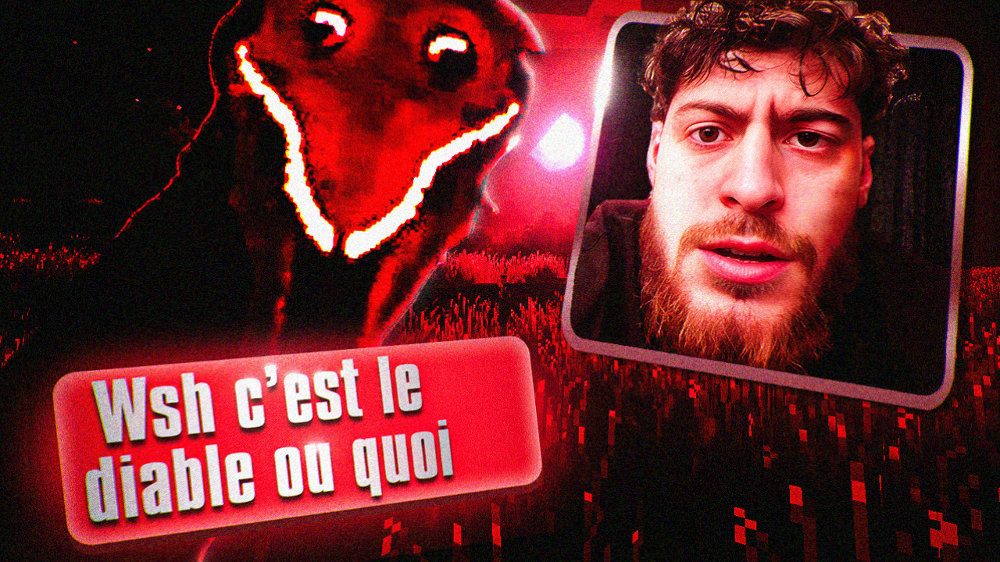
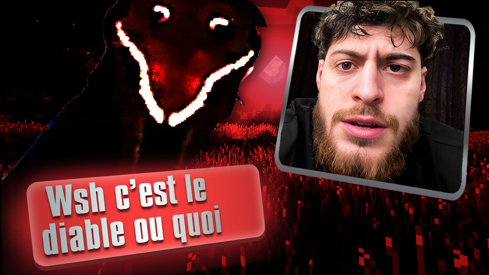

Disponible pour projets / commandes
3D · VFX · Motion
Compétences
Les outils que je maîtrise et mon niveau d'expertise dans chacun.
Créations
Touche une création pour la voir en grand et découvrir les logiciels utilisés.
Avant / Après
Glisse le curseur pour comparer l'image brute et le rendu final.
Photoshop
Blender
./assets/apres.png

./assets/avant.png
Avant
Après

Un projet en tête ?
Miniature, logo, bannière ou scène 3D : rejoins mon serveur Discord, je réponds vite.